Fish Identification
86 species, and 900 animals
Angelfish
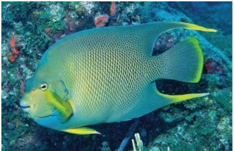
Blue Angelfish
Holacanthus bermudensis1. Tail and pectoral fins bordered in Blue.
Body purplish to blue-green often with pronounced grey cast
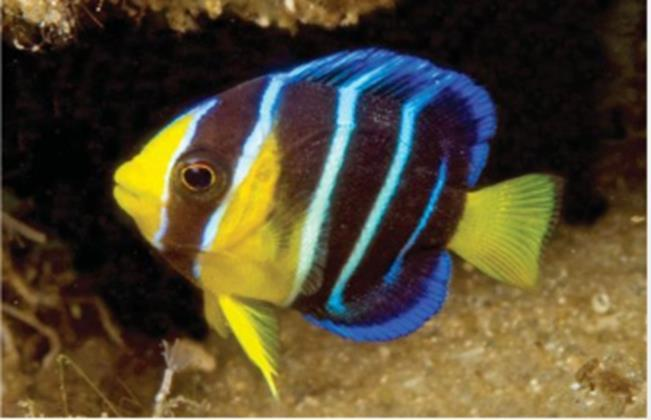
Blue Angelfish
Holacanthus bermudensis juvenileDarkblue with three blue to white body bars. Middle body babr is straight.
Yellow Lips, yellow area from around pectoral to ventral fins; tellow tail.

French Angelfish
Pomacanthus paruBring Yellow ring around eye. Tail Rounded
All fins black except pectoral which is yellow
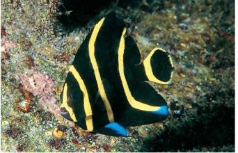
French Angelfish
Pomacanthus paru juvenileRounded Tail with yellow border forming an oval. Black body with three yellow body bars.
Yellow band extends down forehead stopping at the base of the upper lip, splits and goes around mouth

Grey Angelfish
Pomacanthus arcuatusGrey Body, Yellow inner face of pectoral fin
Square-cut tail

Grey Angelfish
Pomacanthus arcuatus juvenileBlack body with threee yellow body bars and one on the foredail
Yellow band extends down from forehead to and around lips. Square cut tail with qhite to transparent margin

Queen Angelfish
Holacanthus ciliaris1. Dark Blue spot on forehead, specked and ringed with briliant blue.
2. Tail yellow. Blue to greenish blue body with yellow rims on scales.

Queen Angelfish
Holacanthus ciliaris juvenileDarak blue boddy with three brilliant blue to white body bars
Second body bar curved

Rock Beauty
Holacanthus tricolorYellow to yellow-orange forebody and tail
Mid and rear body black
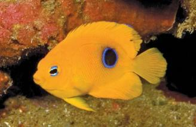
Rock Beauty
Holacanthus tricolor juvenileyellow body with a black spot ringed in brillian blue on rear body
(juvenile)
Butterflyfish

Foureyed Butterflyfish
Chaetodon capistratusBlack spot ringed in white on rear body near upper base of tail.
Black baron head across eye

Reef Butterflyfish
Chaetodon sedentariusYellowish back and dorsal fin, silver white lower body. Black bar on head runs across eye
Broad black bar line area on rear body, including rear portions of dorsal and anal fins.

Spotfin Butterflyfish
Chaetodon ocellatusSilver-white body with black bar on head and runs across eye.
Fins (except pectoral) bright yellow; tail fin translucent on juveniles. Black dot on outer edge of rear dorsal fin.

Banded Butterflyfish
Chaetodon striatusStriking in its contrasting beauty, it has a deep, thin, somewhat disc-shaped body, with a concave forehead and short snout. The coloration of juveniles and adults can be quite different. Juveniles have large, ringed black spot at the base of the dorsal fin, four vertical body bars, with an overall body color of brownish-yellow instead of the white that adults have as a base.
Damselfish

Beaugregory
Stegastes leucostictusDusky grey to blueish body with areas of yellow, especially on tail, rear dorsal and anal fins.
Series of blue dots on head and gill cover continue as vague horizontal lines on upper body. Rarely have black spot on tail base.

Beaugregory
Stegastes leucostictus juvenileBlack spot ringed in blue on dorsal fin.
Blue wash extending from upper head over dorsal fin and back

Bicolor Damselfish
Stegastes partitusBlack and white.
Forebody is usually black however the boundary between ark and pale areas can vary greatly

Blue Chromis
Chromis cyaneaBrilliant blue, often dark on nape and along back
slender deeply forked tail with dark borders
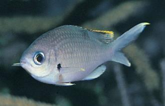
Brown Chromis
Chromis multilineataBrown body, border of dorsal fin and tips of tail fin yellow.Dark spots around base of pectoral fin
Juveniles tail has black borders and white spots on base of dorsal fin
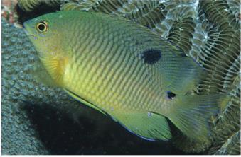
Cocoa Damselfish
Stegastes variabilisUsually have a dark spot on tail base
Lack of spot causes confusion with Beaugregory
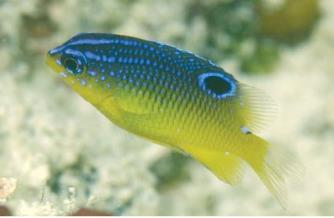
Cocoa Damselfish
Stegastes variabilis juvenileBlack spot ringed in blue on dorsal fin, extend slightly onto back
Blue wash extending from upper head over dorsal fin and back

Purple Reeffish
Chromis scottiSlate blue to dark blue with bright blue markings on head and back.
(Juveniles have brilliant blue with 'V' on snout)
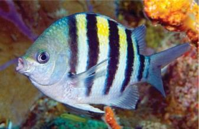
Sergeant Major
Abudefduf saxatilisFive black body bars. Upper lip does not overhand lower. Upper body usually Yellow with shades of green and blue.
Male becomes dark blue to purple durign mating season

Threespot Damselfish
Stegastes planifronsBody varies from yellow to tan & grey, darkening with age.
Dark spot on base of pectoral fin. Lack saddle on upper base of tail.
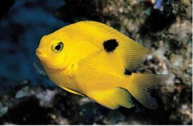
Threespot Damselfish
Stegastes planifrons juvenilehas large second spot on back and base of dorsal fin
(disapears on maturity)

Yellowtail Damselfish
Chrysiptera parasemaDark Body occasionally changing to ywllo or yellow-orange
Yellow tail (starts as translucent to whitish, but changes to yellow on maturity).
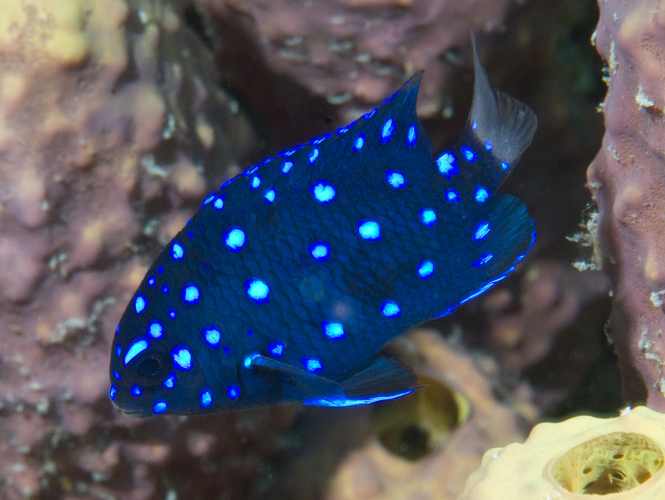
Yellowtail Damselfish
Chrysiptera parasema juvenileDark Body occasionally changing to ywllo or yellow-orange
Yellow tail (starts as translucent to whitish, but changes to yellow on maturity).

Atlantic Jewel Damsel
Microspathodon chrysurusJewel Damsel Fish - Microspathodon chrysurus: As a juvenile, the Jewel Damselfish, also known as Jewelfish or Bluespot Jewelfish is black with sparkling blue dots. As the fish matures, it may turn brown to yellow and have smaller, indistinct spots.

Yellow Damselfish
Amblyglyphidodon aureusThis fish reaches 13 centimetres (5.1 in) in length. It is yellow with blue or purple spots on its face. Some individuals have dark blotches on their sides.

Sunshinefish
Chromis insolataThey are found in schools throughout the tropical Western Atlantic Ocean and are a relatively peaceful Damselfish species. The Sunshine Chromis makes a beautiful addition to any aquarists' display. They are yellow across the back, with lavender along the middle portions of the body, with a white pearly appearance along the stomach.Â
Drum

Highhat
Equetus acuminatusBlack and white stripped body. Elongated dorsal fin.
Similar to Spotted Drum and Jackknife fish but lacks bars on head

Jackknife Fish
Equetus lanceolatusFins with NO spots.
Single black band runs from top to front dorsal fin to and along midbody to the tip of the tail.

Spotted Drumfish
Equetus punctatusFront dorsal fin unusually long. Black and white bars on head and multiple stripes on body.
No spots on rear dorsal or tail fins
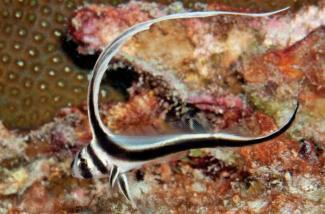
Spotted Drumfish
Equetus punctatus juvenileFront dorsal fin unusually long. Black and white bars on head and multiple stripes on body.
Rear dorsal and tail fins black with white spots

Cubbyu
Equetus umbrosusis a small fish, usually between 6 and 9 inches, that can occasionally be found on coral reefs in the middle western Atlantic
Filefish

Fringed Filefish
Monacanthus ciliatusFilefish are uniquely shaped with deeply keeled bodies and prominently projecting snouts, with small pectoral fins and truncated, fan-shaped caudal fins. There is a slender, retractable spine that crowns the head, just above the posterior portion of the eye. The mouth is small and terminal, containing specialized incisors on the upper and lower jaws. In addition, the upper jaw has four teeth in an inner series and six in the outer series while in the lower jaw there are four to six in the outer series.

Planehead Filefish
Stephanolepis hispidusThe Planehead Filefish have deep laterally compressed bodies. They are a mottled pale brown, olive or green color on a light colored background with two darker brown blotches and streaks on their sides. They are covered with minute scales and their skin is rough to the touch. Their head has an elongated snout with a terminal mouth giving them a concave profile.

Whitespotted Filefish
Cantherhines macrocerusThe American whitespotted filefish typically has a brown or olive colored body, although it may also be grey. These fish can rapidly change appearance to a high contrast color pattern with a much darker background and many light colored spots
Grouper
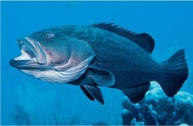
Black Grouper
Mycteroperca bonaciNormally reddish-brown to black. Can pale or darken until markings are indistinct. Tin pale to yellow margin on pectoral fins.
Ends of rectangular blotches on upper body are nearly square. Tail has wide black margin, with thin white edge.

Coney
Cephalopholis fulvaIdentification by color impractical because of several color phases, has a bi-color phase.
Two black dots on lower lip (juvenile has four). Two black dots behind doorsal ffin and on base of tail (juvenile has two white dots on base of tail)

Graysby
Cephalopholis cruentataLight reddish brown to gray body with darker orangish brown spots over body.
Three to ive pale or dark spots along base of dorsal fin. Tail more rounded than similar groupers/seabass.

Graysby
Cephalopholis cruentata juvenileLight reddish brown to gray body: may have a yellowish wash over head and back.
Three to five pare or darkspots along base of dorsal fin. White band runs from nape between eyes to lower lip.
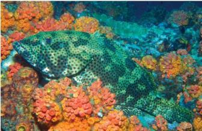
Rock Hind
Epinephelus adscensionisBlack saddle spot on base of tail. Reddish to dark dots cover the body and all fins. One to four pale or dark blotches along back below dorsal fin.
May have additional thin strips on body. Fins are pale. Black spot on base of tail (not always present)

Scamp Grouper
Mycteroperca phenaxLight tan to brown but can darken quickly. Dark body spots tend to form broken stripes and rectangullar splotches.
Dusky tail has pale margin.
Grunt

Bluestripe Grunt
Haemulon sciurusDark tail and rear dorsal fin with light margins: other fins yellow.
Blue stripes over yellow-gold body.

French Grunt
Haemulon flavolineatumYellow stripes on a white to bluish or yellowish silver background.
Yellow stripes below lateral line set on diagonal.

Porkfish
Anisotremus virginicusYellow-gold and silver body stripes.
Two bold black diagonal bands on head. High back profile

Smallmouth Grunt
Haemulon chrysargyreumElongated, cylindrical body. Five or six yellow strips over a silver to silvery-white body.
Yellow fins.
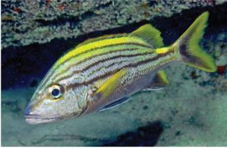
Spanish Grunt
Haemulon macrostomaBold black stripes ono upper body; black strip running from eye to tail is especially noticable.
Yellow green dorsal lhump, yellow saddle or spot on base of tail. Yellow pectoral fins, and borders on the rear dorsal and tail fins

Tomtate
Haemulon aurolineatumProminent yellow to bronze strip running from snout through eye to base of tail. Another thinner strip on back.
Can pale to almost white or darken dramatically.

Caesar Grunt
Haemulon carbonariumPale gray above; belly darker gray. Yellow stripes along side; bronze-yellow stripes and spots on head

Sailor'S Grunt
Haemulon parraSilvery, the edges of the scales narrowly brown, the centers on upper half of body with a spot which may vary in color from yellow through bronze to dark brown (forming oblique dotted lines following scale rows)
Black Margate
Anisotremus surinamensisIt can be found at depths from 0 to 20 m (0 to 66 ft), preferring steeply sloping rocky bottoms or reefs with nearby areas for shelter.
Hamlet-Seabass

Barred Hamlet
Hypoplectrus puellaBrown body bars over pale white to yellowish body.
Broad 'V' shaped bar on mid body. Bright blue vertical liens on head and around eyes and spots on snout.
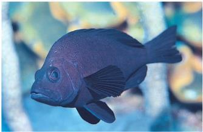
Black Hamlet
Hypoplectrus nigricansSolid black color.
Pelvic fins unusually long

Blue Hamlet
Hypoplectrus gemmabright iridescent blue
thin dark borders on tail

Butter Hamlet
Hypoplectrus unicolorGrayish white to yellow. Blue markings on head and gill cover often have a black dot on snouth that is outlined in blue.
Large black saddle on base of tail.
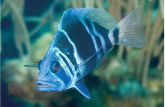
Indigo Hamlet
Hypoplectrus indigoBlue and white bars.
Blue ventral fins, pectoral fins white or clear
Misc
Atlantic Bigeye
Priacanthus arenatusFound on coral reefs and rocky bottoms, Forms small aggregations near the bottom.
Flying Gurnard
Dactyloptena volitansThe Flying Gurnard is also known as the Oriental Helmut Gurnard. It is a light-brown color with orange to dark-brown spots. The pectoral fins can be flared out into an impressive display of fan-like wings, with spines extending beyond the flesh at the tips. The tips of the wings are tinged with a blue.

Creolefish
Paranthias furciferThe Atlantic creole fish has an elongated body with a very short head and a forked tail. This fish can be any color from gray to a very bright red. The creole fish feeds in large groups, often very close to the surface of the water. However, this species tends to hide immediately when alarmed.

Atlantic Creolefish
Paranthias furciferBring red spot at base of pectoral fin.
Three light or dark spots along back

Atlantic Spadefish
Chaetodipterus faberSilvery body with several dark bars.
Body shape resembles a 'spade' on playing cards

Bar Jack
Caranx ruberSilvery Body.
Bright blue and black border on tail runs along dorsal fin and onto lower tail fin

Fairy Basslet
Gramma loretoBicolored -- purple to violet front and yellow to gold rear. Dark spot on dorsal fin.
Several streaks on head run across eye

Glasseye Snapper
Heteropriacanthus cruentatusAlways have silver bars on back which may be faint
Body varies from red to pale, silvery, moddled pink.

Glassy Sweeper
Pempheris schomburgkiShiny copper color. Large eyes.
Deep belly profile and very thin body. Dark band at base of anal fin
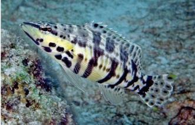
Harlequin Seabass
Serranus tigrinusDark tiger-like body bars. Upper body has whiteish undercolor, lower body yellow
Head more pointed that other members of the seabass family.
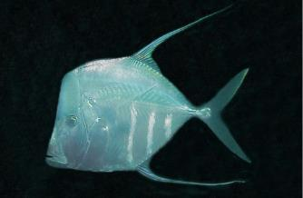
Lookdown
Selene vomerVery thin body and extremely blunt head. May display three or four body bars.
Fore part of dorsal and anal fins elongated.

Mahogany Snapper
Lutjanus mahogoniSilver towhite, often with reddish tinge. Reddish margin on tail (may quite narrow and pale).
Redish border on dorsal and anal fins. Often have a dark spot below rear dorsal fin.

Neon Goby
Elacatinus oceanopsElectric blue body stripe runs from front of eye eye to base of tail.
No markings on snout

Orangespotted Filefish
Cantherhines pullusIn most common phase they have whide, dark brown stripes and narrow dull yellow strips that converge near tail base.
White spot on upper base of tail and usually a second smaller spent underneath. Orangish spots cover body.
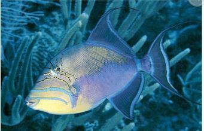
Queen Triggerfish
Balistes vetulaBody color in various shades of purple, blue turquoise and green; lower half of head yellow or yellowish.
Streaming tips on rear dorsal and tail fins. Two blue stripes on face. Small lines radiate from around eye.

Sand tilefish
Malacanthus plumieriLong white body.
Crescent tail. Dark area on upper central tail.

Sargassum Triggerfish
Xanthichthys ringensBody varies from blueish grey to brownish-grey
Three dark lines on cheek. Series of sashes form thin stripes on body. White dot just forward of eye with white crescent bordering upper eye
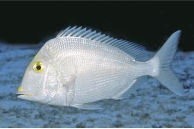
Saucereye Porgy
Calamus calamusSilvery with blueish yellowish and or brassy cast, often with yellow wash over head and forebody.
Short bluish saucer shaped line below eye, and blotch at upper base of pectoral fin. Corners of mouth are yellow.
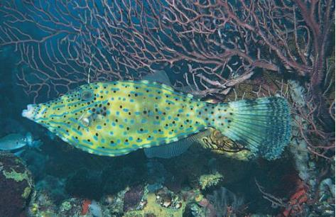
Scrawled Filefish
Aluterus scriptusCovered with blue to blue-green spots. Irregular lines and black dots.
Elongated body with long broom-like tail
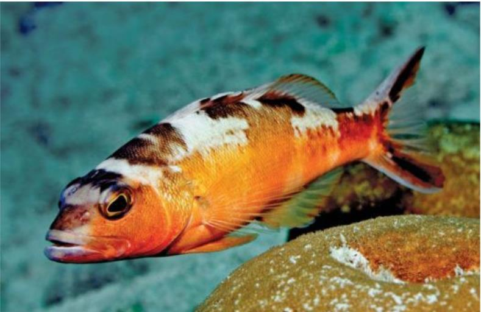
Tobaccofish
Serranus tabacariusMidbody is shades of orange to brown (tobacco color). Dark 'U' shaped border on tail.
Alternating sseries of dark and white to yellow or salmon blotches along back. White belly.
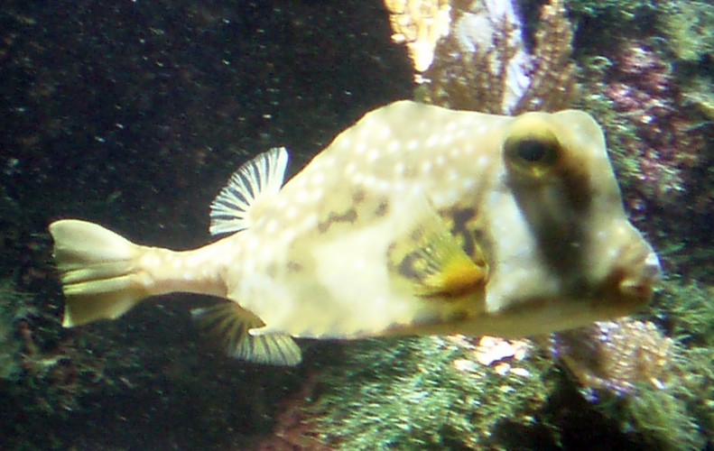
Trunkfish
Lactophrys trigonusWith small diffuse white spots; two areas where the hexagonal plates are dark-edged, forming chain-like markings, one on the pectoral region of the body and the other half way between gill opening and posterior end of carapace; large individuals lose the pale spots and chain markings and develop an irregular dark reticulate pattern over the entire carapace and caudal peduncle
Notable

Atlantic Tarpon
Megalops atlanticusShiny, large 'stainless steel' scales.
Upturned Mouth
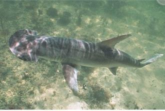
Bonnethead Shark
Sphyrna tiburoGray with pale underside.
Smooth, 'spade-shaped' head
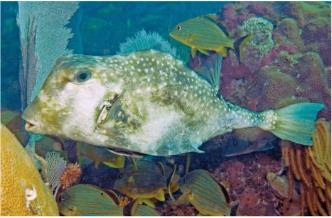
Buffalo trunkfish
Lactophrys trigonusObvious hump on back
Base of tail long. Two sharp spines in front of anal fin. No spines above eyes.

Cownose Ray
Rhinoptera bonasusThe pectoral fins separate at the front to create two lobes with a center crease which.
combined with the indented notch give the rats a cow-line appearance.
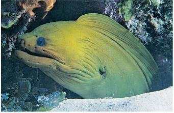
Green Moray
Gymnothorax funebrisHeavy uniform green to brown body with no markings.
(Eel)

Southern Stingray
Dasyatis americanaSnouth and tips of 'wings' pointed
Vary from brown to gray and black. One or two venomous spines at base
Parrotfish

Redband Parrotfish
Sparisoma aurofrenatumGreenish overall with fins usually reddish. Small yellow blotch with two or more small lblack spots on upper boddy.
Usually salmon to orange or yellow band from corner of mouth to below eye
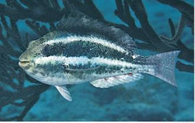
Redband Parrotfish
Sparisoma aurofrenatum juvenileTwo white stripes on dark body
white spot behind dorsal fin

Stoplight Parrotfish
Sparisoma virideEmerald green with bright yellow spot at upper corner of gill cover.
Yellow area at base of tail, and salmon to yellow crescent on tail
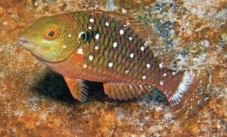
Stoplight Parrotfish
Sparisoma viride juvenilereddish brown body with three rows of whidely spaced white spots that are the length of the body
white bar on tail

Striped Parrotfish
Scarus isertiDark blue or green; tail has pint, yellow or orangish linear markings between border.
gold to yellow spot or stripe above and behind pectoral fin.
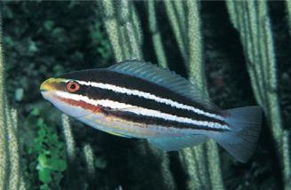
Striped Parrotfish
Scarus iserti juvenilethree black stripes and white bely
no dark markings on tail

Redtail Parrotfish
Sparisoma chrysopterumYoung adults with black saddle-shaped markings at upper end of pectoral fin base; often vague, pale saddle-shaped area on top of caudal peduncle; and dorsal, anal, and pelvic fins red or orange
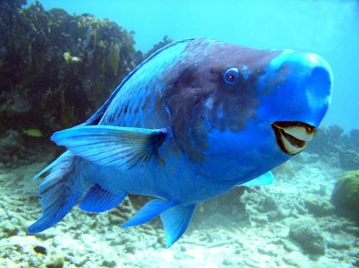
Blue Parrotfish
Scarus coeruleusare uniformly blue in color with a yellow spot on top of the head, which fades as the fish grows. Adults have large scales and develop a protruding snout and extended upper and lower caudal (tail) fin lobes. Like other parrotfishes, blue parrotfishes have the characteristic beak-like jaws with fused teeth used for scraping algae from coral and other rocky substrates.
Porcuppinefish
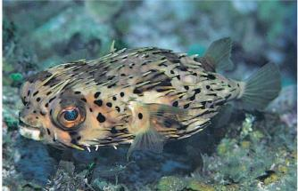
Balloonfish
Diodon holocanthusLong spintes on head, Small dark spots on body, but NO spots on fins.
Iris is yellow, pupil is iridescent blue-green specks. Spines usually lowered but become erect when inflated.

Porcupinefish
DiodontidaeSmall dark spots over entire body and fins.
Long spintes are erect only when inflated
Squirrelfish

Blackbar Soldierfish
Myripristis jacobusRed to silvery Red body. Black bar behind head. Red dorsal fin has white marks at tip and a few along base
White borders on leading edge of ventral, anal, rear dorsal and anal fins
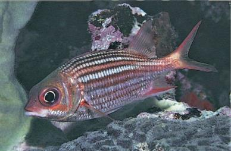
Dusky Squirrelfish
Sargocentron vexillariumUsually dusky, bronze-red body. Wide silver stripes alternating with dusky stripes with dark borders.
Anal and tail fins bordered in brownish-red to bright red

Longspine Squirrelfish
Holocentrus rufusWhite triangular markings at tips of dorsal fin spintes. Reddish body with light silvery stripes and occasional white patches on body.
Elongated rear dorsal fin.
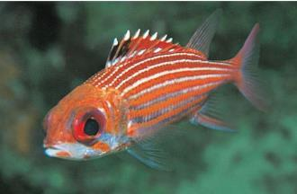
Reef Squirrelfish
Holocentrus coruscusBlack blotch on first dorsal fin runs from first spine to third or fourth spine.
Reddish body with light silvery body stripes. Tips and base of fron dorsal fin marked white.
Surgeonfish

Black Durgeon
Melichthys nigerBlack Body.
Pale blue lines along base of dorsal and anal fins.

Blue Tang Surgeon
Acanthurus coeruleusBody blue overall; juvenile bright yellow.
White or yellow spine on base of tail. More circular than other surgeonfish.

Doctorfish
Acanthurus chirurgusBody can change from blueish gray to dark brown, and pale or darken dramatically. Always have 10-12 body bars although they may be faint.
Dark area extends from base of pectoral fin outward along leading edge.

Ocean Surgeon
Acanthurus bahianusBody of uniform color with no body bars. Pectoral fin clearish often with yellow tints.
Markings radiate from eye. Blue or white edging on dorsal, anal, and tail fins
Wrasse

Bluehead Wrasse
Thalassoma bifasciatumBlue Head. Two dark bars behind head. Separated by white bar. Rear body green to blue-green/
Juveniles canot be distingued by color pattern or sizes. Black spot behind second dorsal ray extend to base of fin

Clown wrasse
Halichoeres maculipinnaVariety of markings and shadings in green blue, violet, rose, orange and yellow. Three red line markings across top of head and two U=shaped lines on snout. Dark midbody blotch.
Elongated black oval on foredorsal fin formed by the mergerof two dark spots that develop in the intermediate phase. Juvenile has thin yellow gold strip that runs from snout above eye to tail with wider back stripe below.

Creole Wrasse
Clepticus parraeDark purple to violet or lavender. Snouth usually dark purple. Older individuals develop yellow to reddish areas on lower rear body.
Juveniles have a series of spots or short bands along back composed of dark and light dots

Hogfish
Lachnolaimus maximusFirst three spines of dorsal fins are long. Black blotch near end of dorsal fin.
Large dusky to dark area covering snout and nape to foredorsal fin. Adults develop pronounced snout and have a large black bar across the central tail.

Puddingwife Wrasse
Halichoeres radiatusBlue to green body; may have white midbody bar. Yellowish margin on tail. Dark dot at base of pectoral fin. Juveniles have five white bars or dots across upper back. Also have two yellow stripes down middle with blueish-white strip in between.
Dark spot on mid-back and dorsal fin

Slippery Dick
Halichoeres bivittatusSmall green and yellow bicolored spot above pectoral fins. Darkish to black midbody strip. A second lower stripe is less distinct and absent in juveniles.
Dark triangular corners of tail; also absent in juveniles. Juveniles are usually white.

Spanish Hogfish
Bodianus rufusPurple upper forebody, may become reddish.
Yellow-gold belly and tail

Yellowhead Wrasse
Halichoeres garnotiYellow head and forebody. Dark midbody bar which continues as a wide border along back to tail.
Two wavy lines radiate from rear upper eye. Juveniles usually have yellow body with brilliant blue midbody stripe